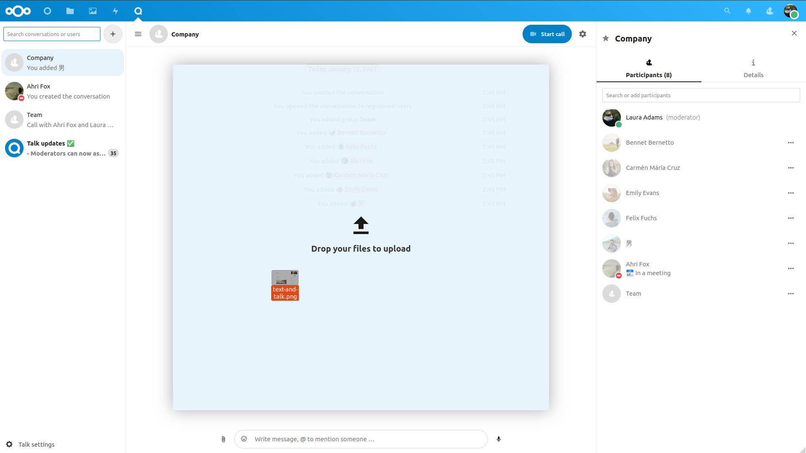
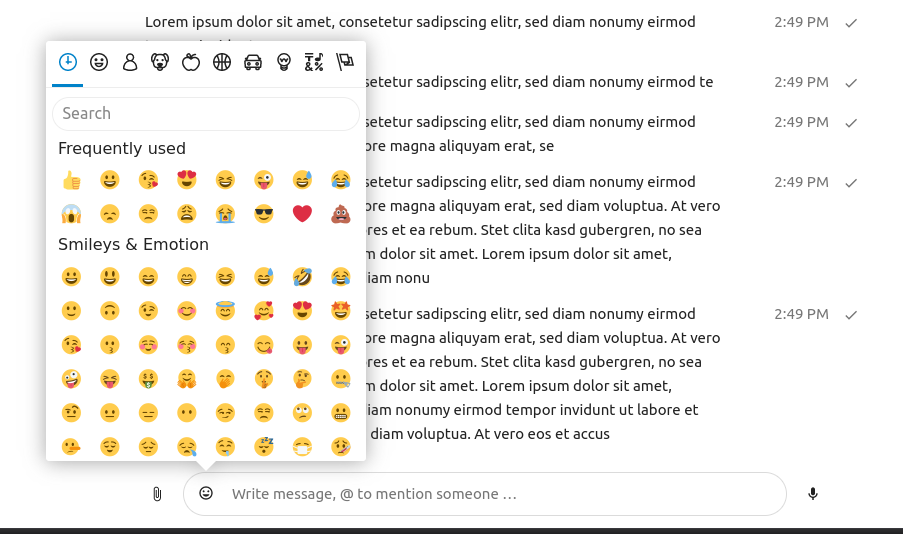

Podstawy NextCloud Talk
Nextcloud Talk umożliwia czatowanie i prowadzenie połączeń wideo na własnym serwerze.
Czaty i połączenia odbywają się w rozmowach. Możesz utworzyć dowolną liczbę rozmów. Istnieją dwa rodzaje rozmów:
Rozmowy jeden na jednego. Tutaj prowadzisz prywatny czat lub połączenie z innym użytkownikiem Talk. Nie możesz dodawać innych osób do tej rozmowy, ani udostępniać jej za pomocą linku. Rozpoczynasz bezpośredni czat jeden na jednego, szukając innego użytkownika na pasku wyszukiwania, a następnie klikając jego nazwę.
Rozmowy grupowe. Oprócz osoby, która utworzyła rozmowę, w rozmowie grupowej może uczestniczyć dowolna liczba osób. Rozmowę grupową można udostępnić publicznie za pomocą linku, dzięki czemu zewnętrzni goście mogą dołączyć do rozmowy. Może być również wylistowany, aby inne osoby na Twoim serwerze Nextcloud mogły dołączyć do rozmowy.
Tworzenie czatu
Możesz utworzyć bezpośredni czat jeden na jednego, wyszukując nazwę użytkownika, grupę lub krąg i klikając ją. Dla jednego użytkownika natychmiast tworzona jest rozmowa i możesz rozpocząć czat. W przypadku grupy lub kręgu możesz wybrać nazwę i ustawienia przed utworzeniem rozmowy i dodaniem uczestników.

Jeśli chcesz utworzyć niestandardową rozmowę grupową, kliknij przycisk plus obok pola wyszukiwania. Następnie możesz wybrać nazwę rozmowy i wybrać, czy rozmowa powinna być otwarta dla użytkowników zewnętrznych, a także czy inni użytkownicy na serwerze mogą zobaczyć rozmowę i do niej dołączyć.

W drugim kroku możesz dodać uczestników i zakończyć tworzenie rozmowy.

Możesz anulować tworzenie rozmowy, klikając w dowolnym momencie poza białym obszarem menu.

Udostępnianie plików na czacie
Możesz udostępniać pliki na czacie na 3 sposoby.
Po pierwsze, możesz je po prostu przeciągnąć i upuścić na czacie.
Po drugie, możesz wybrać plik z Nextcloud Files lub menedżera plików, wybierając mały spinacz i wybierając miejsce, z którego chcesz wybrać plik.


Możesz dodać więcej plików, dopóki nie zakończysz i zdecydujesz się udostępnić pliki.

Wszyscy użytkownicy będą mogli kliknąć pliki, aby je przeglądać, edytować lub pobierać, niezależnie od tego, czy posiadają konto użytkownika. Użytkownicy posiadający konto będą mieli automatycznie udostępniony plik, podczas gdy zewnętrzni użytkownicy-goście otrzymają je udostępnione jako łącze publiczne.

Wstawianie emoji
Emoji możesz dodać za pomocą selektora po lewej stronie pola wprowadzania tekstu.
Odpowiadanie na wiadomości i nie tylko
Możesz odpowiedzieć na wiadomość, używając strzałki, która pojawia się po najechaniu na wiadomość.

W menu ... możesz także odpowiedzieć prywatnie. Otworzy się czat jeden na jednego.

Tutaj możesz również utworzyć link bezpośredni do wiadomości lub oznaczyć ją jako nieprzeczytaną, aby przewinąć ją z powrotem, gdy wejdziesz na czat. Jeśli jest to plik, możesz go wyświetlić w Files (Pliki).
Zarządzanie rozmową
You are always moderator in your new conversation. In the participant list you can promote other participants to moderators using the ... menu to the right of their user name, assign them custom permissions or remove them from the conversation.

Moderators can configure the conversation. Select Conversation settings from the gear menu of the conversation on the top to access the settings.
Here you can configure the description, guest access, if the conversation is visible to others on the server and more.

Rozpoczęcie połączenia
Gdy jesteś w rozmowie, możesz rozpocząć połączenie w dowolnym momencie za pomocą przycisku Rozpocznij połączenie. Inni uczestnicy zostaną powiadomieni i będą mogli dołączyć do połączenia. Jeśli ktoś inny już rozpoczął połączenie, przycisk zmieni się na zielony przycisk „Dołącz do połączenia”.

During a call, you can mute your microphone and disable your video with the buttons on the right side of the top bar, or using the shortcuts M to mute audio and V to disable video. You can also use the space bar to toggle mute. When you are muted, pressing space will unmute you so you can speak until you let go of the space bar. If you are unmuted, pressing space will mute you until you let go.
Możesz ukryć swoje wideo (przydatne podczas udostępniania ekranu) za pomocą małej strzałki tuż nad strumieniem wideo. Przywróć to z powrotem małą strzałką.
You can access your settings and choose a different webcam, microphone and other settings in the ... menu in the top bar.


Zmiana widoku w połączeniu
Możesz przełączać widok w połączeniu za pomocą małej ikony czterech bloków w prawym górnym rogu między widokiem promowanym a widokiem siatki. Widok siatki pokaże wszystkich o jednakowych rozmiarach, a jeśli osoby nie mieszczą się na ekranie, po lewej i prawej stronie pojawią się przyciski, które pozwolą Tobie nawigować.

Promowany widok pokazuje duży głośnik, a innych w rzędzie poniżej. Jeżeli osoby nie mieszczą się na ekranie, po lewej i prawej stronie pojawią się przyciski umożliwiające nawigację.